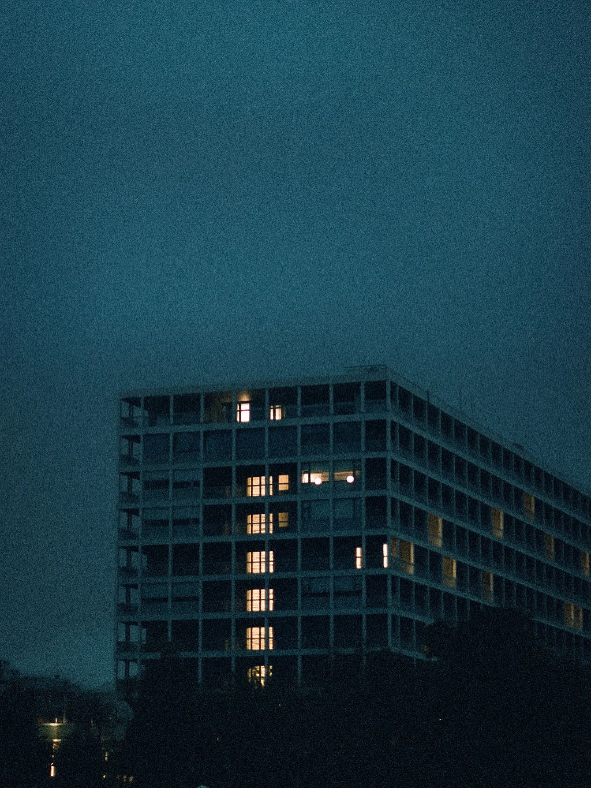
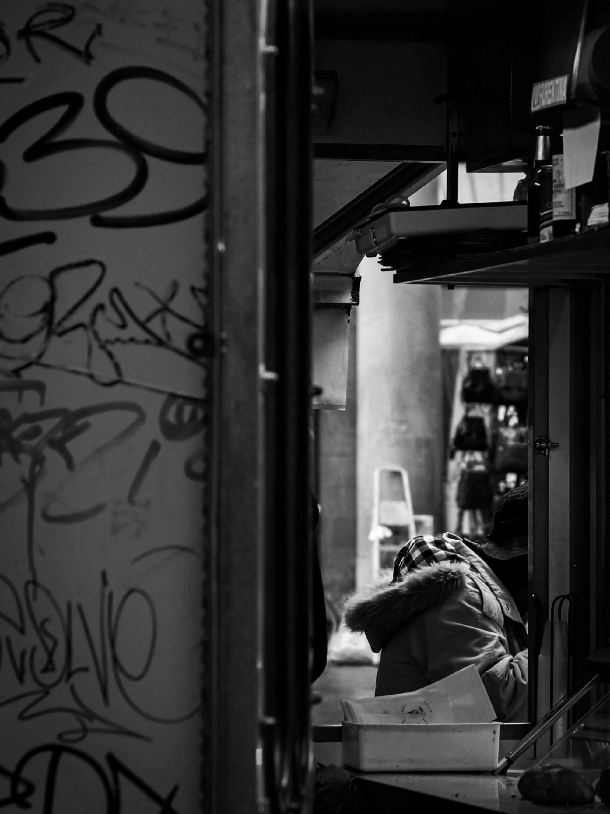
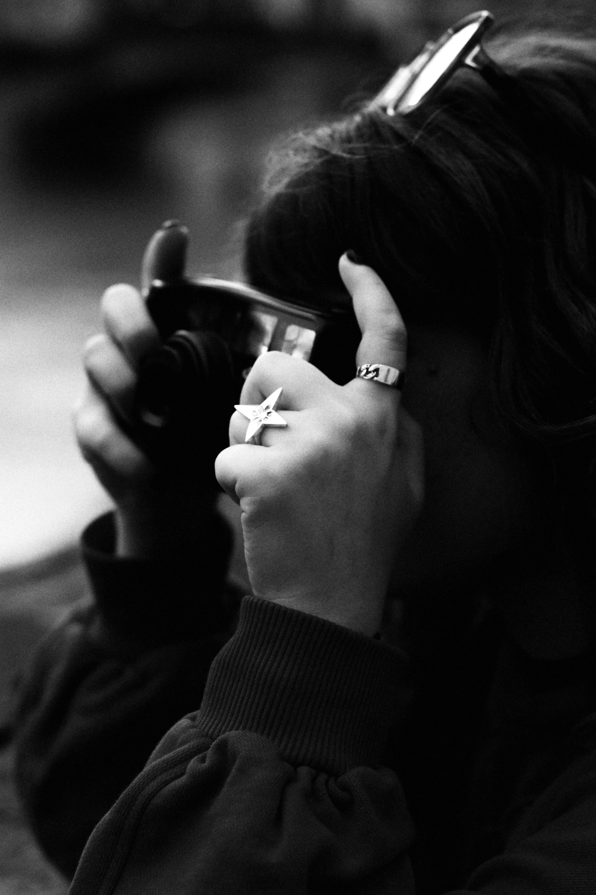
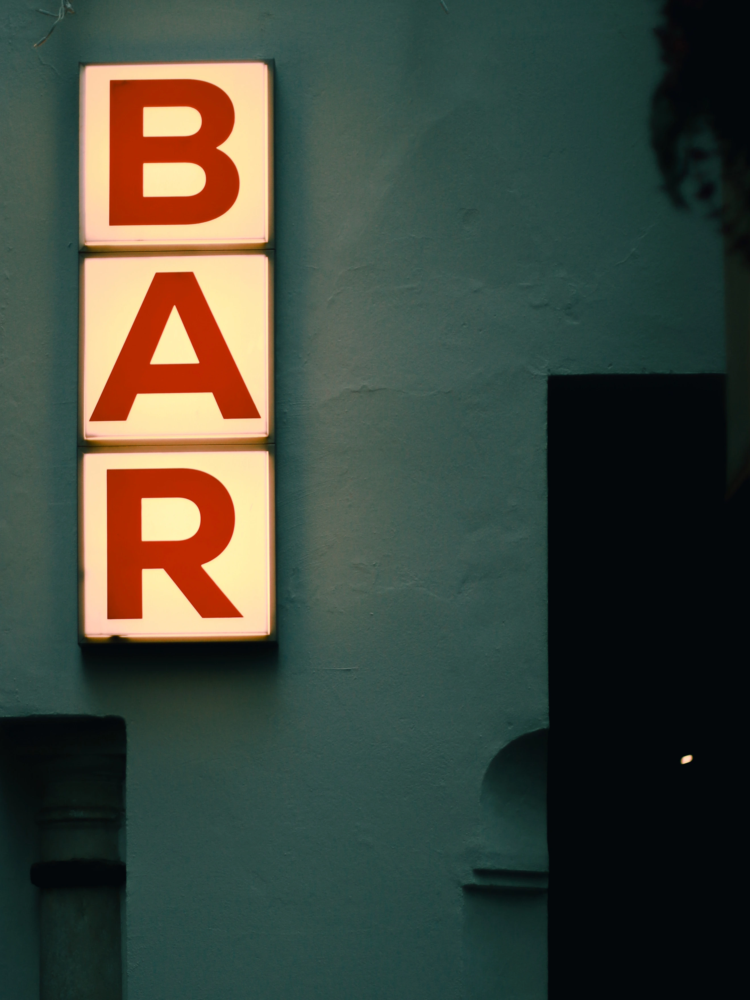
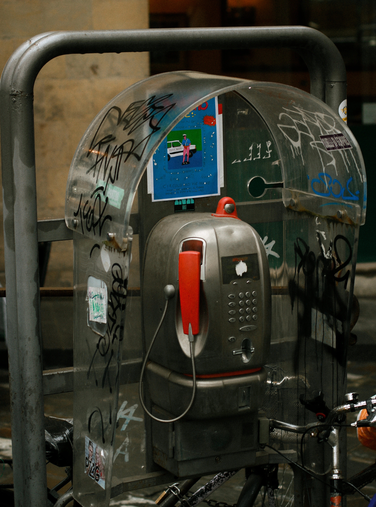
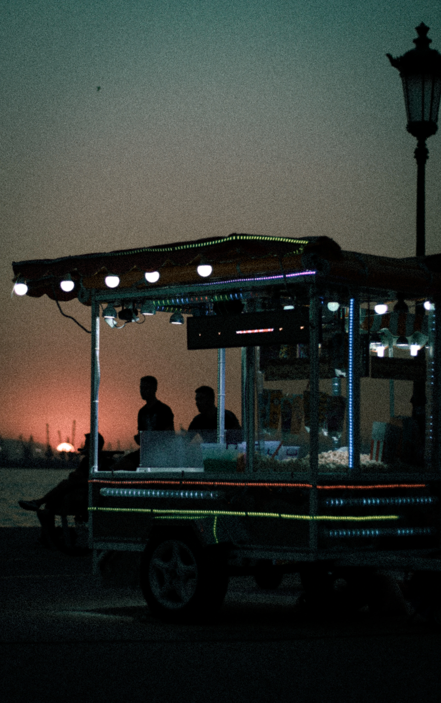
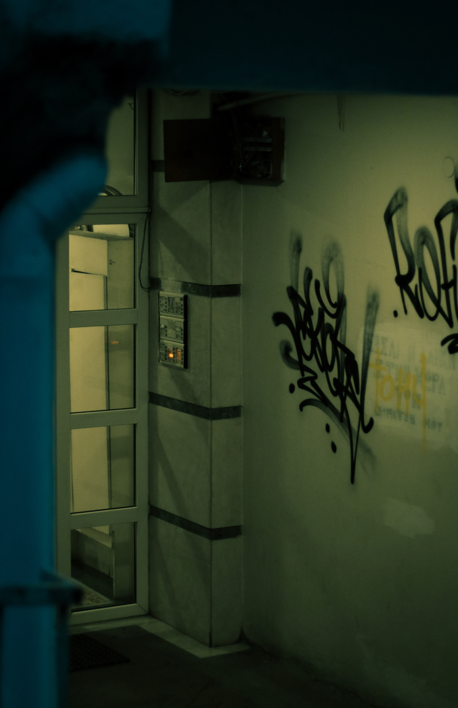

Escapism - The Portfolio
Creating a portfolio isn't just about showcasing your work; it's about telling a story. A well-curated portfolio can captivate your audience, evoke emotions, and leave a lasting impression. Whether you're a photographer, artist, designer, or any creative professional, your portfolio is a reflection of your unique vision and style. It allows you to share your journey, experiences, and the essence of your craft with the world. Through carefully selected pieces, you can convey your artistic voice and connect with others on a deeper level.









More to Come
This portfolio is a work in progress, as I continue to explore and capture new moments through my lens. Stay tuned for more updates and additions to the collection, as I strive to share my evolving artistic journey with you.